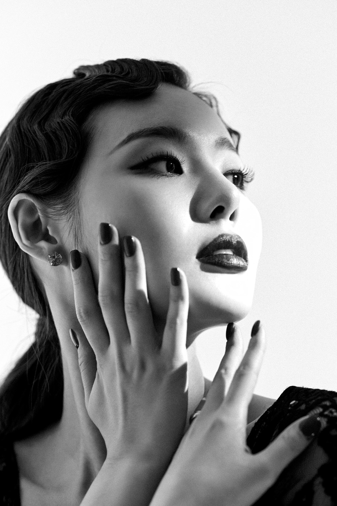

이번 주 표-터뷰 주인공은?
'CHICAGO' 완벽한 록시 하트 민경아
MUSICAL-터뷰
‘시카고’ 민경아, “인기는 물거품 같다고 생각한 작품”
뮤지컬 ‘시카고’의 이번 시즌 새로운 얼굴 중 배우 민경아는 록시 하트 역을 맡아 관객을 매료시키고 있다. 뮤지컬 ‘지킬 앤 하이드’, ‘레베카’, ‘렌트’ 등으로 사랑을 받아온 민경아를 서울 강남구의 한 카페에서 만나 ‘시카고’에 대한 애정이 담긴 이야기를 들어 보았다
Q. 뮤지컬 ‘시카고’에는 전설이 있지 않나, ‘록시 하트’를 연습하면서 꼭 운다고 하던데 경아 씨는 언제 울었나.
"사랑스러움이 표현 안 될 때 힘들었다. 그런 행동이 몸에서부터 자연스럽게 나와야 하는데 제가 너무 많은 생각을 갖고 유명한 작품에다가 많은 여배우가 하던 작품이다 보니 부담이 된 거 같다. 오히려 너무 끼가 넘치면 안 되는 작품이더라. 행동과 표정이 간절하고 순수해서 나와야 한다. 제가 표현하면서 힘들어하니까 창작진과 선배들이 제 안에 록시가 있기 때문에 아무것도 하지 말라고 했었다. 록시가 하고 싶은 이야기, 어떻게 살아왔는지 진실 하게 말만 해줘도 되고 대본을 믿으라고 하더라."
Q. 사랑스러움을 잘 표현할 거 같은데 힘들었다고 하니 의외인데 록시와 닮은 점은 어디라고 생각하나.
"친구들이 공연을 보고 갔는데 저와 록시가 찰떡이었다고 해줬다. 친구들이 저에게 “너를 아는데 의도를 갖지 않고 되게 솔직하고 순수한데, 솔직함에도 여러 면이 있지 않나, 록시가 경아와 잘 맞는 거 같다”고 해줬다. 솔직하고 가식 없고 예쁜 척 하지 않는 면을 닮은 거 같다."
Q. 뮤지컬 배우로 점점 입지를 굳혀가면서 록시에게 공감되는 점도 있을 거 같은데.
"사실 저는 카메라 플래시가 터지는 걸 경험해본 적이 없다. 프레스 콜에서 사진을 찍히는 게 전부라 몸소 느낄 정도로 저를 알아봐 주는 건 실감이 안 난다. ‘시카고’를 통해서 배우는 건 ‘내가 스타가 되더라도 한순간 일 수 있다, 물거품일 수 있겠다’는 걸 배운 거 같다. 오히려 저를 눌러주는 작품이다. 주위에서 저보고 멘탈이 센 편이라고 하는데 무너질 때는 와르르 무너지지만 그걸 인정하고 받아들여서 이겨내려고 하는 긍정이 더 큰 편이다."
Q. 록시 역의 새로운 배우 티파니 영과 서로 의지를 많이 했을 텐데.
"제가 멘탈이 약해질 즈음에 언니는 강하고, 언니가 약하면 제가 강해져 있어서 서로 밸런스가 맞았다. 서로 코멘트를 받은 걸 오픈하고 이야기를 많이 나누면서 도움이 많이 됐다. 티파니 언니가 정말 순수해서 놀랐다. 저와 결이 다른 순수함이 있더라. 제가 연습하다가 울었을 때도 언니랑 달달한 케이크를 먹었고 서로 모놀로그처럼 연습을 많이 했다."

Q. ‘시카고’에서 배우로서 가장 즐거운 순간은 언제인가.
"커튼콜에서 배우 이름을 불러준다는 게 참 특별한 거가 같다. 모든 배우의 이름을 불러주고 오케스트라도 소개하면서 우리가 해냈다는 느낌이 든다. 마치 운동 경기를 잘 마친 느낌이다."
Q. 얼마 전에 씨제스 엔터테인먼트로 소속사를 들어가면서 뮤지컬만 할 거 같지는 않은데 다른 분야도 도전 계획이 있나.
"늘 연기를 잘하고 싶은 배우가 되고 싶다. 노래를 배제하고 연기로서 도전을 하고 싶어서 연극도 하고 싶다. 영화도 하고 싶어서 오디션을 열심히 보고 있다. 저와 딱 맞는 캐릭터를 만나서 색다른 모습을 보여주고 싶다."
Q. 벨마 역의 배우 윤공주는 록시를 했다가 벨마를 하지 않나. 훗날 벨마를 해보고 싶은가.
"저는 벨마가 너무 귀엽다. 절제되어있는 세련미도 있고 멋있다. 나중에 벨마도 꼭 하고 싶다. 언니들의 역사를 보면서 ‘내가 무슨~’이라는 생각보다 ‘나도 언젠가는 해보고 싶다’는 생각이 자연스럽게 든다."
Q. ‘시카고’를 보고 관객이 느꼈으면 하는 것은.
"유쾌하고 통쾌하지 않나. 록시가 쉽지 않은 행동을 대신 해주고 있는데 밉지 않게 세련되게 비꼬기 때문에 관객들이 재미있어 하시는 거 같다. 록시를 통해서 갈증해소를 하시기 바란다."
뮤지컬 ‘시카고’는 최정원, 윤공주, 아이비, 티파니 영, 민경아, 최재림, 김영주, 김경선, 차정현과 열정적인 앙상블이 함께하며 7월 18일까지 대성 디큐브아트센터에서 공연된다.
관련 핫클립
전체보기
[시카고] 사랑스러운 록시 하트 <민경아> 의 Roxie